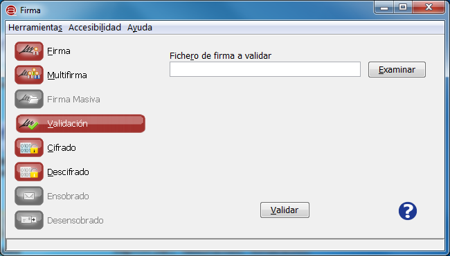

Desde la opción "Validación" podemos validar la estructura y la integridad de nuestras firmas electrónicas binarias y XML.

Para validar una firma electrónica pulsa el botón Examinar y buscar el fichero en el árbol de directorios del sistema. Una vez seleccionada, pulse el botón Validar para proceder a la validación.
Al pulsar el icono de ayuda se muestra la ventana de ayuda para el menú "Validación".
Al pulsar el botón "VALIDe" se abrirá un navegador Web y cargará la página de VALIDe.
En caso de que la firma sea correcta se mostrará la siguiente ventana.
En los datos de la firma validada se identifica el formato de firma, si los datos están contenidos en ella y el árbol de firmas del documento con el nombre del firmante y la fecha de la firma (según el sistema de origen).
En caso de detectar un error en la firma se informará de que la firma no es válida y se le describirá el error al usuario.